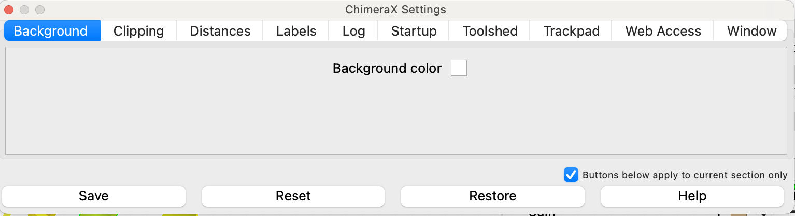

ChimeraX is an extendable program and can be customised to your preferences.
ChimeraX extensions are available through the "Toolshed" and installation is very straightforward. You can access the Toolshed through the toolbar: Tools/ More tools. Popular extensions include Isolde for structure refining, ArtiaX for electron tomography, and XMAS for protein-crosslinking data display.
💡 Tip:
The clix bundle provides an improved command line tool and offers auto-complete functionality and live preview of all available options for a command you are typing
You can customise your ChimeraX thorugh the Preference menu (shortcut: ⌘,). Here are my recommendations to set up once you installed ChimeraX:
Open the Preference menu (shortcut: ⌘,) and change the following:

Most users prefer a white background to match a typical figure display. You can do this in the first tab.
my_style.cxc). Similarly, you should define a color code for your protein of interest in a script if you are preparing figures for a talk or paper. You can quickly apply yoyur favourite styles by placing the .cxc files into a preset folder which you specify in the startup tab. These preests will then appear in the Presets menu in the toolbar. Alternatively you can apply them from the command line with the command preset my_custom_style.Here is an example style script:
# Cylinder_preset
graphics selection color black width 5 # Set selection outline to black with width 5
hide # Hide all models initially
show nucleic # Show nucleic acid models
hide protein|solvent|H # Hide protein, solvent, and hydrogen atoms
surf hide # Hide all surfaces
# Display Styles
style (protein|nucleic|solvent) & @@draw_mode=0 stick # Display protein, nucleic, and solvent as sticks
size protein stickRadius 0.3 # Set stick radius for proteins
size nucleic stickRadius 0.5 # Set stick radius for nucleic acids
show cartoon # Show cartoon representation for proteins and nucleic acids
cartoon style ~(nucleic|strand) x round # Set cartoon style to round for non-nucleic/strand elements
cartoon style (nucleic|strand) x rect # Set cartoon style to rectangular for nucleic acids and strands
cartoon style modeH tube # Use tube style for cartoon mode
# Lighting and Camera
lighting shadows false # Disable shadows for clearer visualization
light soft # Use soft lighting for a smoother appearance
camera ortho # Set camera to orthographic projection
# Silhouette Settings
graphics silhouettes true # Enable silhouettes
graphics silhouettes depthJump 0.1 # Set silhouette depth jump to 0.1
# Centering and Pivot
cofr center showpivot false # Center the view and hide pivot point
# Window Configuration
windowsize 800 800 # Set window size to 800x800 pixels. Very important for making rendered image dimensions reproducible!
# Background and Nucleic Acid Styling
set bgColor white # Set background color to white
nucleotides fill # Fill nucleotides for better visibility
style nucleic stick # Ensure nucleic acids are displayed as sticks
Define your startup commands
If you would like certain commands or tools to be launched automatically, you can define them in the startup tab as well. For example, I recommend installing the enhanced Command line tool Clix, and launch it by outting ui tool show CliX in the Execute these commands at startup field
Restore window size when opening sessions
In the prefence menu, under Window, tick `Resize graphics window on session restore'. This is important for a consistent size of saved images.
Selection specific regions of your model is essential for structural analysis and figure making in ChimeraX. In ChimeraX, selected regions will be displayed with a green outline. There are several ways to select residues:
Select menu in the toolbar. This is good for beginners, but offers only corse control over the selectionTools / Sequence / Show sequence viewer , or with the command sequence chain <selection>. You can then use the mouse to select residues from the sequence viewer, which will be selected in the structure as well💡 Tip:
If you are new to the ChimeraX command line and scripting, notice how every action that the log window displays the command for every action that you execute, no matter if through the toolbars or the command line!
Hierarchical specifiers are the most common way to select items. They have up to four levels:
#)/):)@)| Symbol | Level | Description | Example |
|---|---|---|---|
# |
Model | Model number in ChimeraX, separated by dots (e.g., #1, #1.3). |
#1, #1.3 |
/ |
Chain | Chain identifier (e.g., A, B). |
/A |
: |
Residue | Residue number or name (e.g., :51, :glu). |
:51, :glu |
@ |
Atom | Atom name (e.g., @ca). |
@ca |
Notes:
#1 selects all chains in model 1.#1:100 selects residue 100 in all chains of model 1.select commannd, but many other commands like color also directly accept the selection. So you could either sayselect #1/A
color sel red
or
color #1/A red
Built-in Groups:
Predefined groups like proteins, helices, strands, ligands, solvents, hydrogen bonds, elements, and functional groups.
Tip: Use name list builtins true to see all built-in groups.
User-Defined Targets:
Create your own named selections using the name command.
Attributes:
Select items based on their properties.
Zones:
Select items within a certain distance from others.
Combinations:
Combine different selection methods using logical operators.
Select all atoms in model 1:
select #1
Select chain B in model 2:
select #2/B
Select residue 45 in chain A of model 3:
select #3/A:45
Select residues 45 to 55 in chain A of model 3:
select #3/A:45-55
Select all lysine residues in any model:
select :lys
Select alpha carbon atoms in model 1, chain A:
select #1/A@ca
Select multiple atom types:
select @ca,n,c,o
Select lysine residues in chain B only:
select #1/B:lys
Select all backbone atoms in a protein:
select @ca,n,c,o
You can use logical operators to combine selections:
OR (,):
select #1/A,B
select #1:10,20
NOT (~):
select ~nucleic
AND (&):
select #1 & nucleic
select #1 &~ nucleic
Use the select zone command to select items within a certain distance from others.
select zone ref-spec cutoff [other-spec] [extend true|false] [residues true|false]
ref-spec. Defaults to all.ref-spec in the selection if true.Select protein atoms within 4.5 Å of any ligand:
select zone ligand 4.5 protein
Select atoms within 8 Å of model #1.2:
select zone #1.2 8
Include entire residues within 8 Å of model #1.2:
select zone #1.2 8 residues true
Include reference items in selection:
select zone #1/A:50 5 extend true
Explanation: The selection will cintain all atoms within 5 Å around residue 50 in chain A of model #1, as well as the residue 50 itseld
For more details, check the ChimeraX select command documentation.
For more information, see the ChimeraX Atom Specification documentation.
Use the name command to create labels for selections, making future commands easier.
name [frozen] target-name spec
_, +, or -.Dynamic Target for Transmembrane Residues 34-64 in Chain A:
name tm1 /A:34-64
Usage:
color tm1 medium blue
Explanation: tm1 always refers to residues 34-64 in chain A, even if new models are added. So if you open a new model after you defined the name, the command 'color tm1 medium blue' will color both models
Static Target for All Leucine Residues:
name frozen leucines :leu
Usage:
color leucines yellow
Explanation: leucines refers only to the leucine residues present when it was defined. So if you open a new model after the name was generated, color leucines yellow will only affect the model that was open when you first generated the name!
Static Target Based on Current Selection:
select ligand :<5.5
~select solvent
name frozen pocket sel
Usage:
color pocket red
Explanation: pocket refers to atoms within 5.5 Å of any ligand, excluding solvent, as selected initially.
List all user-defined targets:
name list
Tip: Add builtins true to also list built-in targets.
Delete a specific target:
name delete target-name
Delete all user-defined targets:
name delete all
The matchmaker command aligns and superimposes protein or nucleic acid structures by:
matchmaker #model_to_align to #reference_model
Align Model 2 to Model 1:
matchmaker #2 to #1
Align Models 3, 4, and 5 to Model 6:
matchmaker #3-5 to #6
pairing: How chains are paired for alignment.
bb (default): Best matching chains.sc: Specify chains in both structures.sb: Specify a chain in the reference and find the best match in the other structure.matrix: Substitution matrix for sequence alignment.
BLOSUM-62 (default for proteins)PAM-150NUCLEIC (for nucleic acids)alg: Alignment algorithm.
nw (default): Needleman-WunschSaving Targets:
User-defined targets are saved within your ChimeraX sessions.
Auto-Define Targets:
Add name commands to your Startup preferences to define targets automatically when ChimeraX starts.
For more information, visit the ChimeraX name command documentation.